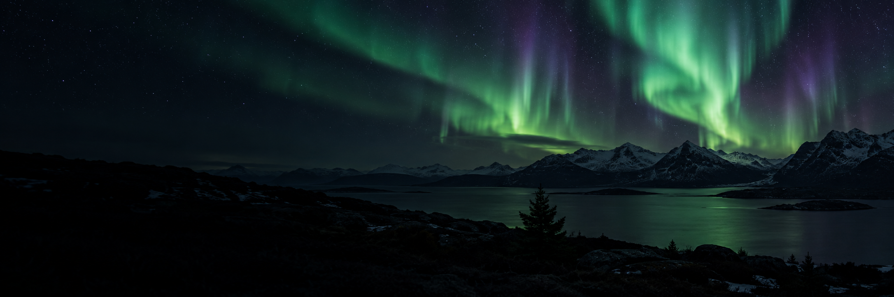

A clear view of the next gathering.

Illustrative booking series; no service connected.
NORTHERN STAGE / LOCAL STUDY
One evening beneath the northern sky. Independent generated cover and an illustrative event; this page does not sell tickets.
Saved only in this page; no purchase or server connection.
来源17.5秒页墙中，浅灰侧栏、四指标、极光封面、右侧客户/票券和底部双线图可辨。品牌字形与微文案不清，event desk为自写名称，数字和布局按可见内容拟合。封面为独立生图。周期、客户筛选、票券记录、同图详情与返回为本地补写，不声称作者后台或真实购票。